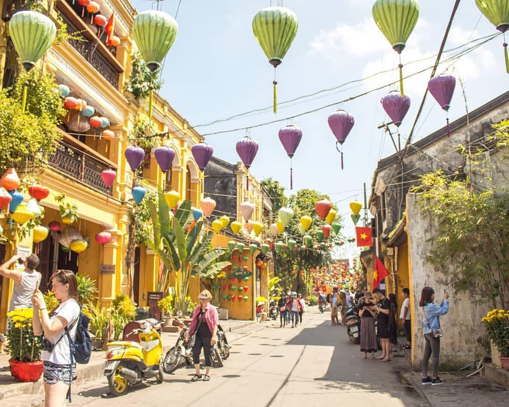

Hoi An Among 10 Best Pedestrian Destinations In The World
Hoi An Ancient Town in Central Vietnam has recently been ranked as one of the 10 best car-free destinations in the world for American travelers to visit by the US magazine National Geographic (NatGeo).
 Photo: @hoiantown
Known as a UNESCO heritage site chocked-full of ancient buildings and historical sites dating back thousand years ago, Hoi An is specifically attracted to culture vultures and history lovers.
Hoi An Ancient Town has become a car-free, pedestrian-friendly zone since 2014. Vehicles are banned from 9 am to 11 am and from 3 pm to 9:30 pm every day.
Taking a boat tour serenely along the iconic Hoai River, getting on a basket boat, joining traditional cooking classes, and visiting one of the legendary tailors in Hoi An for a custom dress or suit within 48 hours are some of the typical activities this American Magazine suggested visitors do. Additionally, grab a quick bite of "banh mi" (Vietnamese sandwich), especially "banh mi Phuong" is a not-to-miss thing in Hoi An.